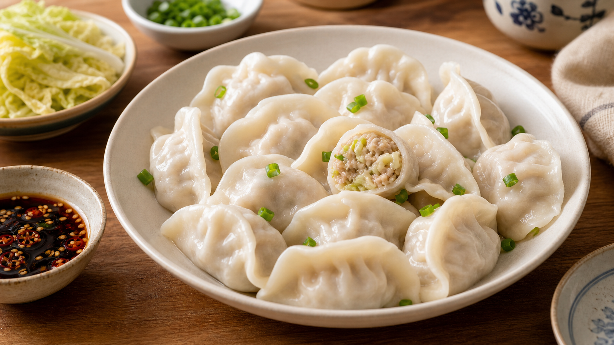
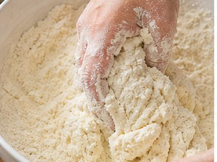
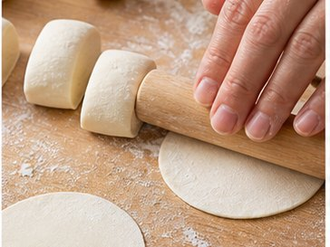
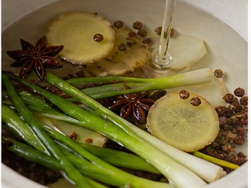
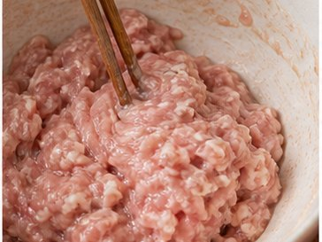
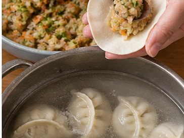

Reunion Dinner Recipe
Pork & Chinese Leaf Dumplings
Family participation, wealth and good fortune.

About This Dish
Dumplings are one of the most recognisable dishes served during Chinese New Year. Their shape is often associated with prosperity, while the making process brings family members together around the table.
Ingredients
- 20% fat pork mince (500 g)
- Chinese leaf (600 g)
- Strong white flour (500 g)
- Spring onion (3)
- Ginger (20 g)
- Star anise (2)
- Sichuan peppercorns
- Seasoning: Cooking wine (1 tbsp), garlic powder (1/2 tsp), ginger powder (1/2 tsp) and five-spice powder (1/4 tsp). Soy sauce (2 tbsp), dark soy sauce (1 tbsp) and oyster sauce (1 tbsp). White pepper (1/4 tsp) and sesame oil (1 tbsp). Optional: egg (1)
Method
-

Mix strong white flour with 250-270 ml water to form a dough. Rest for 20 minutes, then knead until smooth. -

Roll the dough into a long cylinder, divide it into small portions, and roll each portion into a wrapper. -

Prepare spring onion, ginger, Sichuan peppercorn and star anise water using hot water. -

Add the flavoured water gradually to the pork mince while stirring in one direction until the filling becomes springy. -

Add seasonings, chopped spring onion, shredded Chinese leaf. Wrap the dumplings and boil for 10 minutes, until they float and are fully cooked.
Allergens
- Wheat / gluten
- Sesame
- Oyster sauce, may contain molluscs or shellfish depending on brand
- Egg, if used
Please check product labels carefully, especially for sauces and prepared ingredients.